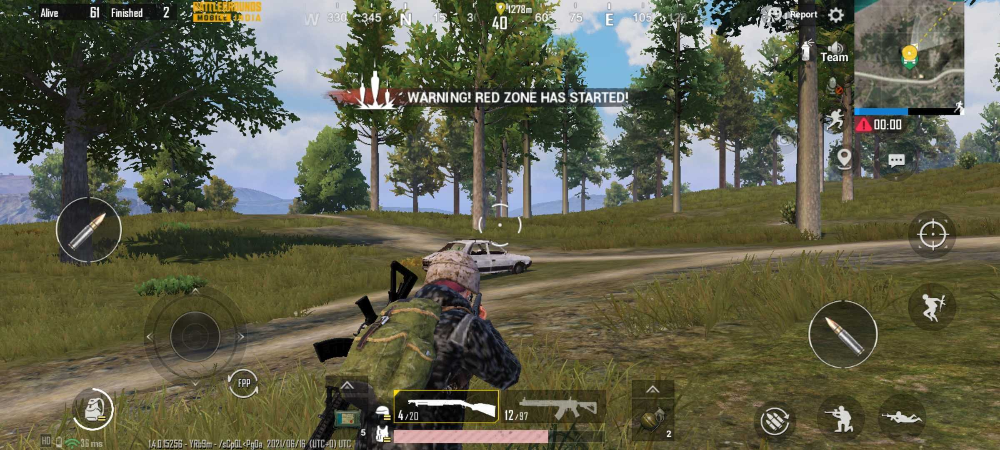

Battlegrounds Mobile India (BGMI,[5] previously known as PUBG Mobile India[6]) is the Indian version of PUBG Mobile, exclusively for players in India.[7][8][9][10] It is an online multiplayer battle royale game developed and published by Krafton.[11] The game was initially released on 2 July 2021 for Android devices,[11] and on 18 August 2021 for iOS devices.[12] As of July 2022, BGMI surpassed 130 million downloads on Google Play store.[13] The game was banned in India on July 28, 2022, by the Indian government.[14] According to a statement from Krafton, the ban was removed on May 26, 2023.[15] Gameplay Battlegrounds Mobile India, or BGMI, is a TPP-FPP survival shooter game in which up to 100 players compete in a battle royale, a type of large-scale last man standing deathmatch in which players compete to be the last one standing. Players can enter the match as individuals or as small groups of up to four. Each match starts with players parachuting from a plane onto one of the following seven maps: Erangel (Themed / Normal) Miramar Vikendi Livik (Themed / Normal) Karakin Sanhok Nusa (New) Each round, the plane's flight path across the map changes, requiring players to quickly determine the best time to eject and parachute to the ground. Players begin with no equipment other than customised clothing options that have no effect on gameplay. Once on the ground, players can search buildings, ghost towns, and other locations for weapons, vehicles, armour, and other items. At the start of a match, these items are procedurally distributed throughout the map, with higher-risk zones typically having better equipment. Finished players can also be looted for their gear. Players can choose to play in first-person or third-person, with each having advantages and disadvantages in combat and situational awareness.
